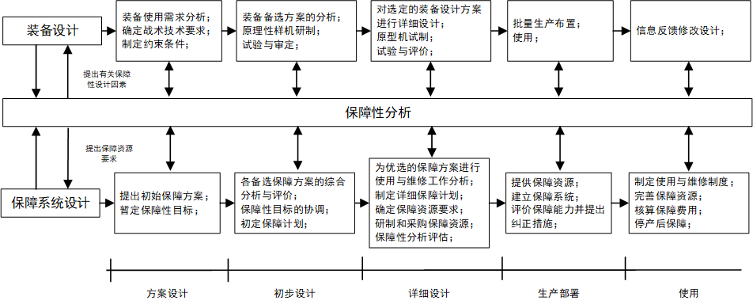

【学术】装备综合保障入门
条评论一、基本概念
（一）保障性
- 定义：保障性是装备的设计特性和计划的保障资源能够满足平时战备和展示使用要求的能力。
- 保障性是一种重要的武器质量特性，保障性设计的缺陷将导致保障性水平不能满足使用要求，装备使用效能将受到影响，战斗力也将受到制约。
- 定义中装备的设计特性是指与装备保障有关的设计特性，保障性与可靠性、维修性、测试性、安全性及生存性一样，是由设计赋予装备的固有属性。
- 定义中计划的保障资源是指装备使用与维修保障所需的人、物、信息等资源。
- 定义中平时战备和展示使用要求是指装备的作战或训练任务经过转化得到的装备使用要求，主要包括装备动用的数量、装备动用周期以及装备使用频度等信息。装备满足平时战备和战时使用要求的能力通常用战备完好性和任务持续性来度量。
- 保障性是现代装备设计所考虑的一个综合的系统特性，是装备的设计特性及其保障资源组合在一起的装备系统属性。
（二）保障资源
保障资源是装备使用和进行装备维修等保障工作的物质基础。保障资源包括物资资源、人力资源、信息资源。通常将其划分为如下8个方面。
- 人力与人员：维护装备的主体。
- 供应品：包括备件和消耗品。
- 保障设备与工具：装备使用和维修时所需的全部设备和工具。
- 技术资料：工程图样、技术规范、技术手册、技术报告、规程、细则、说明书和计算机软件文档等。
- 训练保障资源：装备使用维护的培训大纲及教材、训练器材和训练设备。
- 计算机保障资源：侧重在与软件相关的保障资源。
- 保障设施：使用与保障装备和设备所需的永久性与半永久性的构筑物及其设备。
- 包装、装卸、储存和运输资源：装备及其供应品和保障设备在包装、装卸、储存和运输时所需的资源。
（三）保障系统
1、保障系统的组成
- 保障系统是使用与维修装备所需的所有保障资源及其管理的有机结合，是由实体部分和非实体部分有机结合而成。
- 其功能是维持装备的正常使用，保障系统既要在装备使用时能保证装备操作动用，又要在装备故障时能够及时修复装备。
将保障系统从功能、资源、组织三维要素角度展开，可分为：
- 功能要素：使用保障、维修保障
- 资源要素：物资资源、人力资源、信息资源
- 组织要素：用户、承制方、第三方；站点1、站点2、站点3；基层级、中继级、基地级。
2、保障系统的设计
保障系统的设计通常采用自顶而下的方法进行设计，且保障系统的设计与装备的设计并行开展。
- 保障系统的设计通常分为：方案设计、初步设计、详细设计研制、生产及建造、部署及使用、退役几个过程。
- 保障系统的设计的每个过程围绕分析、综合与评价的迭代过程展开的。只是每个过程的综合、分析与评价的对象和层次不同
保障系统的设计过程时实现保障系统的组织结构、保障资源以及保障活动达到较优匹配的一系列分析、综合与评价的方法合集。
分析：针对保障系统的顶层设计要求，依照保障系统内部个要素之间的逻辑关系，自顶向下对保障系统各个层次的功能进行分解的方法。通过保障系统分析能够得到表征保障系统各个层次功能的一系列设计参数。
综合：把已知要素放在一起，更具模型、知识和技术手段，根据保障系统各个层次的功能要求来确定保障系统的备选设计方案。
评价：对保障系统备选方案能够满足设计要求的程度给出定性或定量结果的过程。
ps:保障对象是装备保障系统行为的作用实体，可以是各个硬件分解结构层次的装备。
（四）保障方案
保障方案：保障系统完整的总体描述称为保障方案。保障方案满足装备的保障要求并与装备设计方案及使用任务相协调，是对构成保障系统三维要素及其相互关系的完整说明，是保障系统的信息载体。主要包括：
1、使用保障方案
使用保障方案是对完成使用任务、充分发挥装备作战性能所需的装备保障的说明，由满足使用功能的保障要求以及设计方案及使用方案相协调的各综合保障要素的方案所组成。
2、维修保障方案
维修保障方案是对保障系统中装备维修保障功能的总体描述。
在维修保障方案中，应做到：
首先，要对修理级别做出规划，明确个修理级别需承担的维修任务。通常分为基层级、中继级和基地级三级，也可分为基层级和基地级两级。
其次，需要对维修组织进行说明。维修组织由维修站点构成，维修站点可以有多个，而且其职责随装备的部署、使用时间和装备保障阶段的不同二变化。各维修站点的职责取决于其具备的或将具备的保障能力。
此外，还要对维修策略进行说明，也称维修原则，它既影响装备的设计要求，又影响对维修保障系统的要求。其维修类型一般分为预防性维修（计划维修）和修复性维修（非计划维修）。预防性维修可进一步分为小修、中修和大修。
最后，还要对维修保障资源进行说明，即确定各类维修保障资源的功能要求、数量要求和使用条件等信息。
（五）综合保障工程
综合保障工程是在装备研制的全过程中，为了满足战备和任务的要求，综合规划装备所需的保障问题，并在装备部署使用的同时，以可以承受的寿命周期费用，提供与装备相匹配的保障资源和建立有效的保障系统所进行的一系列技术和管理活动。
活动的目的：
- 通过开展综合保障工作对装备设计施加影响，以是装备设计便于保障。
- 在获得装备的同时，提供经济有效的保障资源和建立相应的保障系统，以使所属部队的装备可以得到保障。
综合保障工程主要应制定与战备完好性目标和性能设计及其之间具有最佳匹配关系的保障要求，有效地将保障问题纳入装备系统设计，研制与获取有效的保障资源，在使用阶段以最低的费用来实施对装备的保障。
- 装备保障系统与装备性能研制应同步进行
- 综合包含在那个工程力求达到最低的寿命周期费用
- 综合保障工程以装备的战备完好性和任务持续性位最终评价目标
- 综合保障工程采用系统分析的方法
二、保障性分析
保障性分析是综合应用一些分析技术（如故障模式及影响分析、以可靠性为中心的维修分析、保障费用分析、保障性分析评估等）对系统和设备的综合保障进行的分析，国外称为后勤保障分析（LSA）。也可称综合保障分析。
常用的保障性分析技术主要包括：
- 故障模式及影响的分析（FMEA）
- 损坏模式及影响分析（DMEA）
- 修复性维修工作项目确定分析
- 以可靠性为中心的维修分析（RCMA）
- 使用与维修工作分析（O&MTA）
- 修理级别分析（LORA）
- 保障资源设计要求分析
- 保障费用分析（LSCA）
- 保障性分析评估
保障性分析技术的特点：
- 保障性分析技术是装备设计与保障系统设计相协调的纽带
- 保障性分析技术是一个多专业、多接口的综合性分析技术
- 保障性分析技术是一个反复、有序迭代的分析过程
- 保障性分析技术是系统工程分析技术的综合运用
装备及其保障系统设计与保障分析的关系：

保障性分析技术之间的关系：

参考文献：《装备保障性分析技术》北京航空航天大学出版社。